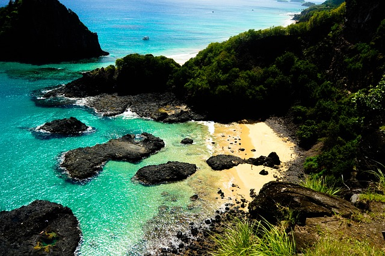
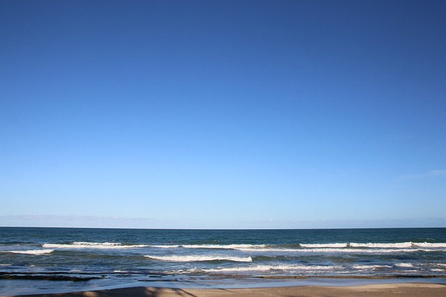

Principais pontos Turístico de Pernambuco
Fernando de Noronha
Fernando de Noronha é um dos mais famosos pontos turísticos de Pernambuco e do Brasil. Afinal, quem nunca sonhou em passear no arquipélago mais bonito do país?
Portos de Galinhas
Praia conhecida naionalmente pela sua beleza natural
